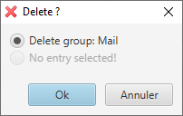
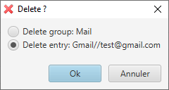

Actions on Groups and Entries
When an Entry is selected, a set of actions that can be performed is available through the menu entry 'Edit' our through the context menu:
- the Entry can be edited,
- the URL can be browsed in the default web navigator,
- the user name or the password can be copied to the clipboard,
- finally, the password can be showed to the user.
In this last case, for security reasons, selecting another Entry will hide the previously shown password.
The display order of Groups and Entries can be modified through the context menu entries 'Up' and 'Down'.
An Entry can also be transferred in another Group through the context menu entry 'Move to ...'.
When triggering the 'Delete' action, two behaviors can happen:
-
If no Entry is selected, the only proposed action is to delete the currently selected Group.

-
If an Entry is selected, user has to choose between deleting only the currently selected Entry or deleting the currently
selected Group.
